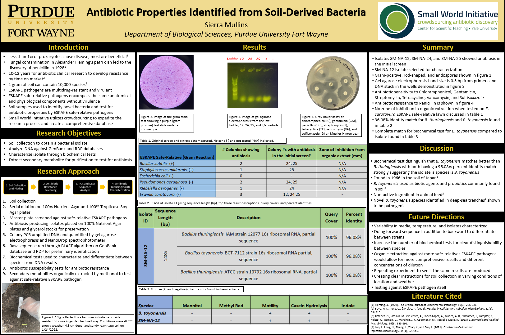

Sierra Mullins
Graduate Student + Research Assistant
Currently, I am part of a Pre-Professional Program at the Indiana University School of Medicine. I am in the works of obtaining my Master's of Science in Anatomy, Physiology, and Cellular Biology. During the semester, I also work as a pediatric cardiology graduate research assistant.
My first job at McDonald's allowed me to obtain interpersonal and management skills in a fast-paced environment. During the summer of 2018, I went to Chicago to attend the Hugh O' Brian World Leadership Conference with 14 other countries. From there, I graduated high school with my Associate's Degree in General Studies summa cum laude. I then graduated two years later with a Bachelor of Science in Biology, an Associate of Science in Chemical Methods, an honor's certificate, and a minor in Psychology. For my duration of college, I participated in Student Government Association as a Senator, public relations committee chair, student representative in the faculty senate curriculum committee, and vice president of legislation. On one of my spring breaks, I spent 10-days researching turtles in Costa Rica. I have worked as a patient care tech in the COVID-19 and cardiac telemetry unit, empowering my motivation to become a physician someday. I am currently part of the Master's Degree Preprofessional Program in Anatomy, Cell Biology, and Physiology while working as a research assistant at the Indiana University School of Medicine. Feel free to ask me about any of my experiences mentioned!
Featured Projects
View selected projects below.
Antibiotic Properties Identified from Soil-Derived Bacteria

Antibiotic resistance is an advancing medical threat as increased usage results in decreased efficiency over time. Small World Initiative™ seeks to utilize an international program for crowdsourcing by creating a database of individual experiments to seek new antibiotics. The experiments require a sample of soil to be collected. Plates of soil collected from the soil are tested for antibiotic properties and resistance. PCR and DNA sequence analysis is conducted followed by biochemical tests for identification. The species is identified along with antibiotic properties for future reference as a possible synthetic compound using the secondary metabolites to produce antibiotics or other means of products.
View Project OneComparative Results for Complementary and Alternative Medicine (CAM) and Pharmaceutical Therapies for Managing Systemic Lupus Erythematosus

Systemic lupus erythematosus (SLE) is a multi-system autoimmune disease with complex symptoms and underlying physiological mechanisms that vary between patients. It is one of the top 10 causes of death. The initial treatment uses immunosuppressive therapies combined with hydroxychloroquine, glucocorticoids, and immunomodulatory/immune-suppressive agents with cyclophosphamide and biologics used as necessary. Alternative treatments are acupuncture, massage, vitamin supplements, reflexology, aromatherapy, exercise, diet, and counseling. A database search was used to synthesize articles to evaluate different treatments based on a baseline for efficacy. Pharmaceutical treatments showed more significant therapeutical benefits with adverse events while CAMs improve health-related quality of life. Using more recent classifications for SLE scores, implementing health-related quality of life, and increasing study population size are recommended for further studies.
View Project TwoEducation
Indiana University School of Medicine - Indianapolis
Master of Science, 2022-2023
Anatomy, Cell Biology, and Physiology
Purdue Unviersity - Fort Wayne
Bachelor of Science, 2020-2022
Biology, Psychology minor, Honor's Certificate
Purdue University - Fort Wayne
Associates of Science, 2020-2022
Chemical Methods
Vincennes University - Vincennes
Associates of Science 2016-2020
General Studies
Summa Cum Laude
Work Experience
Managerial, academic, and empathetic qualities demonstrated in hard-work environment and hoping to continue personal growth through new endeavors.
Graduate Research Assistant
Indiana University School of Medicine
Aug 2022 - Present
Supports research projects on pediatric cardiology diseases and treatments.
- Prepped samples and reagents for experiments
- Organized data to be analyzed
- Collected mice weights
Waitress
Yum Thai
May 2018 - July 2022
Cooks, cleans, and serves.
- Communicated through phone for orders
- Maintained machines through cleaniness and basic troubleshooting
- Implemented innovative systems for increased work efficiency
Vice President of Legislation
Student Government Association of Purdue Fort Wayne University
Jan 2022 - May 2022
Resides over student senate and committes within.
- Meetings under Robert's Rule of Order
- Facilitated student voices to faculty
- Charter and amended club constitutions (12)
Pro Tempore
Student Government Association of Purdue Fort Wayne University
May 2021 - Dec 2021
Assists Vice President of Legislation in administrative tasks.
- Follow procedural rules
- Prepared structural layout to conduct tasks
- Took minute summarizing meeting concisely
Shift Manager
McDonald's
Oct 2015 - Jul 2022
Achieving customer satisfication through teamwork making the dreamwork.
- Managed crew members (up to 12)
- Solved customer and worker complaints through complex problem solving
- Managed under a high-intensity work environment (100 cars a hour)
Substitute Teacher
East Allen County Schools
Aug 2020 - Feb 2022
Teaching the minds of the future.
- Supervised students (up to 30)
- Conducted class from written explanation
- Tutored students in diverse environments
Care Team Assistant Ambassador
East Allen County Schools
Jul 2020 - Feb 2021
Healing through caring.
- Monitored vitals and responded to medical emergencies (up to 24 patients)
- Assisted with daily activities of living in COVID and Heart Failure Unit
- Trained new employees (6)
Line Cook
Shigs in Pit BBQ
Oct 2018 - Oct 2019
Cooking in a welcoming environment.
- Weighed meat to specific measurement
- Active place requiring attentativeness
- Cautiously detailed cleaning of equipment for meat processing
Retail Salesworker
PACSUN
Oct 2018 - Oct 2019
Selling clothes and getting to know customers.
- Markets clothes to variety of customers
- Achieves goals based on needs of individual
- Created aesthetically pleasing work
Experiences
Hospice Volunteer
Adoration Hospice June 2020-Current
Administrative tasks and companionship.
Public Relations Chair
Student Government Association of Purdue Fort Wayne University Aug 2020-May 2021
Organized events for impowering students.
Curriculum Committee
Student Government Association of Purdue Fort Wayne University Aug 2020-May 2021
Overviewed as a non-voting member of new implements on school curriculums giving input from a student perspective.
Hospital Intern
Parkview Cancer Institute Aug 2019-Dec 2019
Shadowed radiology, oncology, and physicist.
Alumni
Hugh O' Brian Youth Leadership World Leadership Conference July 2018
United with 14 other countries reviewing global issues and world citenzenship involvement to better all.